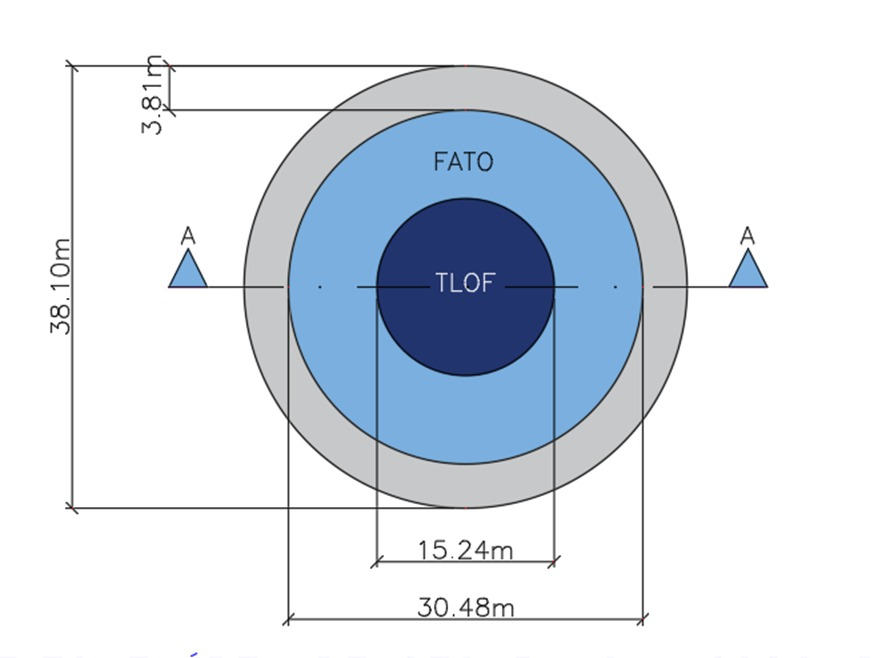
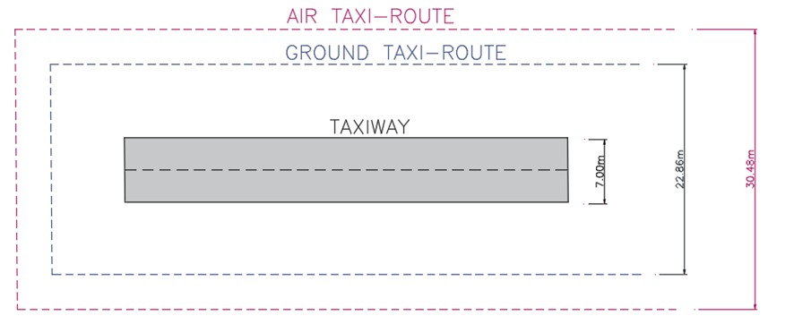

1. Identificação e Objetivo
O presente memorial descritivo tem por finalidade apresentar os critérios adotados para o pré-dimensionamento geométrico de um vertiporto destinado à operação de aeronaves do tipo eVTOL/VTOL, considerando uma abordagem conservadora baseada nas normas nacional e internacionais. O estudo foi desenvolvido para subsidiar a elaboração de desenhos preliminares, com definição das principais áreas operacionais, tais como TLOF, FATO, área de segurança, taxiway, rota de táxi terrestre e aéreo.
Este documento tem como premissa principal adotar o maior parâmetro encontrado entre as aeronaves analisadas e, simultaneamente, os critérios normativos mais conservadores ou mais completos entre as referências consultadas. A intenção é estabelecer um projeto conceitual e preliminar de aceitação internacional atendendo a todos os critérios e permitindo futura adaptação conforme evolução da regulamentação.
Como ainda há incertezas relevantes sobre a certificação final de diversas aeronaves eVTOL, bem como sobre os requisitos nacionais e internacionais específicos para vertiportos, o pré-dimensionamento foi conduzido com margens geométricas prudentes.
No contexto brasileiro, não há, até o momento considerado neste estudo, um Regulamento Brasileiro da Aviação Civil específico e definitivo para vertiportos e aeronaves eVTOL. Por esse motivo, a referência nacional disponível para consulta é o RBAC 155, voltado a helipontos. No entanto, para o caso descrito nesse documento foi adotada uma estratégia mais ampla, utilizando também referências internacionais da FAA, EASA e CASA.
2. Escopo do Pré-dimensionamento
O escopo deste memorial contempla o pré-dimensionamento das áreas físicas principais necessárias para operação de um vertiporto em nível conceitual. Foram considerados os seguintes elementos:
- área de toque e elevação inicial, denominada TLOF;
- área de aproximação final e decolagem, denominada FATO;
- área de segurança ou envelope externo de proteção;
- rota de táxi terrestre, entendida como faixa protegida para deslocamento terrestre da aeronave;
- rota de táxi aéreo, entendida como faixa protegida para deslocamento aéreo em baixa altura.
O conteúdo deste memorial possui finalidade de anteprojeto servindo como base para desenho, apresentação técnica e consolidação de premissas.
4. Referências Normativas e Técnicas Consideradas
O pré-dimensionamento considerou um conjunto de referências normativas e técnicas de caráter nacional e internacional. As principais referências foram:
4.1 ANAC / RBAC 155
No Brasil, a referência atualmente aplicável por analogia é o RBAC 155, que estabelece requisitos para helipontos. Embora o regulamento não tenha sido criado especificamente para vertiportos e aeronaves eVTOL, ele serve como base nacional para interpretação preliminar de áreas de pouso e decolagem vertical.
Para o presente documento o RBAC 155 não foi usado como critério principal de dimensionamento, pois a intenção foi gerar uma alternativa internacional conservadora. Mesmo assim, ele permanece relevante para comparação com a alternativa nacional e para demonstrar que o estudo reconhece a ausência de regra brasileira específica para vertiportos.
4.2 FAA — Engineering Brief 105A
A FAA, por meio do Engineering Brief 105A, apresenta orientações para planejamento, projeto e construção de vertiportos ou heliportos destinados a aeronaves VTOL. Essa referência é especialmente importante porque propõe critérios específicos para vertiportos, incluindo dimensões mínimas para TLOF, FATO e Safety Area.
A FAA utiliza, para determinados elementos, o parâmetro RD associado ao rotor/propulsor, além do parâmetro D para a dimensão controladora da aeronave. Como o dado RD específico das aeronaves analisadas não estava disponível de forma completa para todas elas, este memorial adotou o D como aproximação conservadora para pré-layout.
4.3 EASA — PTS-VPT-DSN
A EASA publicou especificações técnicas prototípicas para o projeto de vertiportos VFR, fornecendo uma base detalhada para áreas físicas, rotas de taxiamento, áreas de segurança, superfícies de proteção e conceitos de operação. Essa referência é uma das mais completas para eVTOLs e serviu como base importante para os critérios de rotas de táxi terrestre e aéreo.
4.4 CASA — Guide to Vertiport Design
A autoridade australiana CASA publicou um guia de projeto de vertiportos com abordagem bastante didática e aplicável a estudos preliminares. O documento apresenta conceitos de Design VCA, Design D, FATO, TLOF, taxi-routes, stands e afastamentos. Por ser voltado à interpretação prática e ao planejamento inicial, foi utilizado como referência complementar importante para organizar o raciocínio do pré-dimensionamento.
5. Premissas Adotadas no Pré-dimensionamento
As premissas adotadas foram definidas para permitir a elaboração de um desenho preliminar consistente, mesmo diante da ausência de todos os dados certificados das aeronaves eVTOL.
5.1 Aeronave crítica
A aeronave crítica adotada foi a BETA ALIA VTOL, com:
Esse valor foi adotado como dimensão de referência para as áreas circulares principais e para os corredores de taxiamento.
5.2 UCW adotado
O único valor de UCW identificado de forma objetiva durante o estudo foi de aproximadamente 2,90 m para a Joby. Para aplicação em aeronaves maiores e considerando a incerteza das demais configurações, adotou-se:
Esse valor não deve ser interpretado como fator de segurança normativo. Trata-se de uma hipótese conservadora de anteprojeto, obtida pela majoração do valor disponível para permitir a definição preliminar da taxiway pavimentada.
5.3 Geometria circular
As áreas principais foram representadas em formato circular, por se tratar de uma geometria compatível com operação omnidirecional e por facilitar a aplicação direta do parâmetro D. A representação circular também simplifica a visualização das envoltórias de segurança em planta e pode ser posteriormente adaptada para geometria quadrada, retangular ou poligonal, conforme condicionantes do terreno e exigências operacionais.
6. Dimensionamento da TLOF
A TLOF corresponde à área de toque e elevação inicial, ou seja, a superfície onde a aeronave efetivamente toca o solo ou estrutura durante o pouso e de onde inicia a decolagem. Ela deve possuir resistência adequada, estar livre de obstáculos incompatíveis, apresentar superfície regular e permitir a operação segura do trem de pouso.
Foi adotado critério conservador internacional (FAA):
Substituindo o valor adotado:
Portanto, a TLOF foi pré-dimensionada como uma área circular com diâmetro de 15,24 m.
Essa escolha é mais conservadora que a referência típica de heliponto baseada em 0,83D, pois permite acomodar com maior segurança a projeção da aeronave e seu trem de pouso, especialmente em um contexto de eVTOLs de geometrias variadas.
7. Dimensionamento da FATO
A FATO, ou Final Approach and Take-off Area, é a área de aproximação final e decolagem. Trata-se de uma região destinada a conter a fase final de aproximação e o início da decolagem, oferecendo margem para desvios, correções e eventual rejeição de decolagem, conforme critérios da aeronave e procedimento operacional.
Foi adotado critério conservador:
Substituindo o valor de D:
Portanto, a FATO foi pré-dimensionada como uma área circular com diâmetro de 30,48 m.
Esse valor é coerente com a intenção de criar um padrão internacional conservador. Em algumas referências, a FATO mínima pode ser menor, por exemplo 1,5D, desde que observadas as condições da aeronave e o manual de voo. Entretanto, para o presente estudo, a adoção de 2,0D aumenta a margem geométrica e reduz o risco de subdimensionamento.
8. Dimensionamento da Área de Segurança
A área de segurança tem a função de reduzir o risco de danos à aeronave em caso de desvios da FATO, além de contribuir para a proteção contra obstáculos e para a organização da área operacional.
Foi adotado:
Substituindo:
Portanto, a área de segurança foi definida com diâmetro de 38,10 m.
Como a FATO foi definida com 30,48 m, a faixa de segurança entre a borda da FATO e a borda do envelope externo é calculada por:

Figura 2 — Planta FATO e área de segurança.
9. Dimensionamento da Taxiway Pavimentada
A taxiway pavimentada é a faixa física destinada ao deslocamento terrestre da aeronave, seja por meios próprios, por rodas ou por equipamento de reboque, conforme a configuração da aeronave e o conceito operacional do vertiporto.
As referências EASA/CASA indicam, para a taxiway associada a aeronaves eVTOL, uma largura mínima baseada no UCW. O critério adotado foi:
Com a premissa conservadora de UCW = 3,50 m, tem-se:
Portanto, a taxiway pavimentada foi pré-dimensionada com largura de 7,00 m.
10. Dimensionamento da Rota de Táxi Terrestre
A rota de táxi terrestre corresponde à área protegida associada à taxiway terrestre. Ele não representa necessariamente toda a faixa pavimentada, mas sim o envelope dentro do qual a aeronave pode se deslocar com segurança, considerando sua largura total e as folgas necessárias em relação a objetos ou limites operacionais.
Foi adotado:
Substituindo:
Portanto, a rota de táxi terrestre foi definida com largura total de 22,86 m.
Como a taxiway pavimentada possui 7,00 m, a faixa livre adicional em cada lado é:
11. Dimensionamento da Rota de Táxi Aéreo
A rota de táxi aéreo corresponde à faixa protegida para deslocamento da aeronave em baixa altura, geralmente em condição de hover taxi ou deslocamento próximo ao solo. Esse tipo de operação pode gerar efeitos significativos de downwash e exige maior afastamento lateral do que o taxiamento terrestre.
Para a Tabela A, foi adotado:
Substituindo:
Assim, a rota de táxi aéreo foi definida com largura total de 30,48 m.
Considerando a taxiway pavimentada de 7,00 m, a faixa livre lateral em cada lado é:
Esse envelope é importante para prever uma condição operacional mais crítica, especialmente em vertiportos onde a aeronave não se deslocará apenas por taxiamento terrestre. Em situações nas quais o conceito operacional excluir a rota de tráfego aéreo, essa faixa poderá ser tratada como reserva futura ou área de proteção complementar.

Figura 3 — Esquema linear taxiway e zonas de proteção.
12. Quadro Resumo dos Valores Adotados
A seguir, apresenta-se o resumo dos valores adotados para o pré-dimensionamento:
| Elemento | Fórmula adotada | Valor adotado |
|---|---|---|
| Aeronave crítica | BETA ALIA VTOL | D = 15,24 m |
| UCW adotado | Hipótese conservadora | 3,50 m |
| TLOF | 1,00 × D | 15,24 m |
| FATO | 2,00 × D | 30,48 m |
| Área de segurança | 2,50 × D | 38,10 m |
| Faixa além do FATO | (38,10 − 30,48) / 2 | 3,81 m por lado |
| Taxiway pavimentada | 2 × UCW | 7,00 m |
| Rota de táxi terrestre | 1,50 × D | 22,86 m |
| Faixa além da taxiway | (22,86 − 7,00) / 2 | 7,93 m por lado |
| Rota de táxi aéreo | 2,00 × D | 30,48 m |
| Faixa além da taxiway para air taxi | (30,48 − 7,00) / 2 | 11,74 m por lado |
13. Conclusão
O pré-dimensionamento foi desenvolvido com o objetivo de criar uma alternativa conservadora e internacionalmente orientada para implantação preliminar de vertiporto. A aeronave crítica adotada foi a BETA ALIA VTOL, com D = 15,24 m, por representar a maior dimensão dentre as aeronaves consideradas no estudo.
Com base nesse parâmetro, foram definidos os principais elementos geométricos: TLOF = 15,24 m, FATO = 30,48 m e área de segurança = 38,10 m. Para taxiamento, adotou-se UCW = 3,50 m como hipótese conservadora preliminar, resultando em taxiway pavimentada = 7,00 m. Complementarmente, foram definidos rota de táxi terrestre = 22,86 m e rota de táxi aéreo = 30,48 m, permitindo maior clareza na separação entre faixa física de rolamento e envelope operacional protegido.
A solução proposta é adequada para fase de estudo e apresentação, pois estabelece dimensões claras, rastreáveis e justificáveis. O uso combinado de referências FAA, EASA, CASA e ANAC permite uma abordagem mais robusta do que a simples aplicação de critérios de heliponto, reconhecendo as particularidades geométricas das aeronaves eVTOL.
Recomenda-se que, em etapa posterior, os valores sejam revisados com base nos dados oficiais da aeronave escolhida, incluindo manual de voo, geometria certificada, UCW real, RD quando aplicável e procedimentos operacionais.
14. Referências Bibliográficas
- AGÊNCIA NACIONAL DE AVIAÇÃO CIVIL. RBAC nº 155: Helipontos. Brasília: ANAC, versão vigente.
- AGÊNCIA NACIONAL DE AVIAÇÃO CIVIL. Alerta aos Operadores de Aeródromos nº 001/2023: Infraestrutura para pouso e decolagem de aeronaves eVTOL. Brasília: ANAC, 2023.
- CIVIL AVIATION SAFETY AUTHORITY. Guide to Vertiport Design. Canberra: CASA, 2024.
- EUROPEAN UNION AVIATION SAFETY AGENCY. Prototype Technical Specifications for the Design of VFR Vertiports — PTS-VPT-DSN. Cologne: EASA, 2022.
- FEDERAL AVIATION ADMINISTRATION. Engineering Brief No. 105A: Vertiport Design, Supplemental Guidance to AC 150/5390-2D, Heliport Design. Washington, DC: FAA, 2024.
- BETA TECHNOLOGIES. ALIA VTOL Aircraft — Technical and product information. South Burlington: BETA Technologies, página institucional.